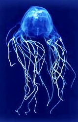
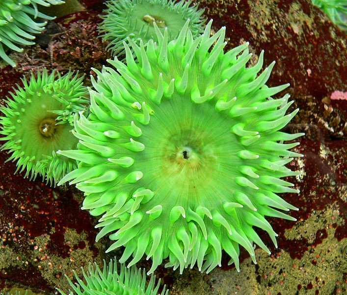

Los escifozoos, (del griego skyphos, copa) son un grupo de cnidarios en el que predomina la fase medusa. En general son de gran tamaño, todos marinos y carecen de velo. Presentan cuatro tentáculos bucales con función alimenticia y , excepto los rizostómidos, tentáculos en el borde de la umbrela, la cual se encuentra celularizada.
{kind=link}
Los órganos de los sentidos se sitúan en el borde umbrelar, en unas estructuras denominadas ropalias, que contienen un estatocito, un ocelo y una foseta sensorial.
{kind=link}
La cavidad gástrica está dividida por cuatro septos. Los sexos, en general, están separados y las gónadas se desarrollan en la cavidad gástrica. La larva plánula, una vez que se fija en el fondo, se transforma en un polipo denominado escifistoma.
Éste se reproduce asexualmente, dividiéndose de forma transversal en un proceso denominado estrobilación, en el que se forman pequeñas medusas apiladas denominadas éfiras.
Familia Cepheidae
Cotylorhiza tuberculata (Macri, 1778)
Nombres comunes: Aguacuajada, medusa huevo frito
o acalefo encrespado (Ingl: Fried egg jellyfish; Fr:
Méduse ceuf au plat; Ale: Spiegeleiqualle)
{kind=link}
Familia Pelagiidae
Pelagia noctiluca (Forskål, 1775)
Nombres comunes: medusa luminiscente
(Ingl: Luminiscent jellyfish, pink jellyfish; Fr: Acalèphe brillante; Ale: Feuerqualle)
{kind=link}
Familia Rhizostomatidae
Rhizostoma pulmo (Macri, 1778)
Nombres comunes: Aguamala, aguaviva o acalefo azul
(Ingl: rhizostome jellyfish, White jellyfish; Fr: Rhzostome, poumon de mer; Ale: Blumenkohlqualle)
{kind=link}
Los hidrozoos se caracterizan por una alternancia entre la fase pólipo y la medusa, aunque suele existir una predominancia de la fase pólipo. Engloba unas 2.700 especies, todas ellas de pequeño tamaño y poco llamativas, por lo que son el grupo de Cnidarios menos conocido.
Entre ellos se encuentran las únicas especies dulceacuícolas de Cnidarios, como Hydra. Los primeros hidrozoos datan del Precámbrico, pero su registro fósil comienza a ser abundante en el Cretácico tardío, hace unos 65 millones de años
{kind=link}
Las medusas son de pequeño tamaño, y es característica la presencia del velo, una especie de membrana en la parte interior del borde de la umbela que confiere cierta movilidad a la misma.
Tienen un manubrio, pero carecen de tentáculos orales; también poseen ocelos, órganos fotosensibles, y estatocistes, órganos del equilibrio en el borde de la umbela.
{kind=link}
Pueden llegar a medir hasta 15 centímetros de largo, adoptan la forma de una pluma y de ahí su nombre científico.
La estructura de una colonia de Aglaophenia pluma cuenta con diversos tipos de zooides, cada uno de ellos con una estructura llamada hidroteca, en la que pueden contraerse.
{kind=link}
Se trata de un pólipo solitario que encontraremos aferrado a diversas especies de gorgonias en las aguas del Mar Caribe, de donde se cree que es endémico. Se trata de una especie que raramente encontraremos en aguas de mas de 15 metros de profundidad.
{kind=link}
La palabra cubozoa proviene del las palabras en griego kybos, que significa «cubo» y la palabra zoon, que significa «animal».
La palabra cubozoa significa literalmente «animal con forma de cubo» La clase de los cubozoa tiene varios nombres, se los conoce como cubozoa, cubozoos, cubomedusas, cubomedusae y comúnmente como avispas de mar.
La clase cubozoa pertenece al filo de los cnidarios y estos dos grupos se encuentran dentro del reino animal.
En la actualidad solamente hay unas 40 especies identificadas dentro de este grupo de animales.
El nombre común de «avispa de mar» en estos animales, hace referencia al potente veneno que poseen en sus tentáculos y el nombre científico de «cubozoa» hace referencia al la morfología en forma de cubo que tienen estas medusas en particular.
Chirodropida : medusas cubo con bases musculares ramificadas en las esquinas de su paraguas.
{kind=link}

{kind=link}
{kind=link}
Incluye anemonas, corales, plumas de mar; son exclusivamente marinos y pueden ser solitarios o coloniales.
En la actualidad se han identificado mas de 6.000 especies de antozoos, entre las que conocemos comúnmente como anémonas de mar, plumas de mar, esponjas y corales.
Otra característica en cuanto a su morfología es que estos animales pueden llegar a tener simetría simetría octorradial, aunque normalmente las especies presentan simetría hexarradial, esto significa que puedes dividir su cuerpo en seis partes igual o más desde un mismo punto.
El cuerpo tiene forma de columna y por la zona apical se encuentra la una boca rodeada de tentáculos, en algunos casos los tentáculos de estos animales disponen de unos aparatos llamados cnidocitos con los que inyectan veneno.
Al igual que en los cubozoa o cubozoos, el aparato circulatorio de los antozoos no se encuentra, las principales funciones de la circulación se realizan en la cavidad gastrovascular, la cual trasporta los fluidos que el animal necesita mediante el proceso llamado mecanismo de trasporte.
Este mecanismo se encarga de trasportar todos los fluidos por los tejidos internos de su cuerpo, el fluido en todos los casos es agua fresca oxigenada.
El aparato digestivo de los antozoos está formado por una boca, una traquea, el estómago, unos filamentos digestivos y el ano. Por lo que el aparato digestivo es completo.
La boca en este caso no comunica con la cavidad gastrovascular como pasa en los demás cnidarios, comunica con una faringe ectodérmica con la presencia de unos conductos con cilios que ayudan a enviar la comida al estómago.
En la cavidad gastrovascular está localizado el estómago, donde se absorben los nutrientes. Después los alimentos sin nutrientes son enviados otra vez a la boca, actuando como ano los expulsara al exterior.
Nombre científico: Actinia Equina
Nombre común: Tomate
Descripción:
Su tamaño es de unos 5cm a 7cm de altura y unos 6 cm de diámetro, destaca su uniforme mayormente rojizo (aunque también puede ser verde, marrón o naranja) y tiene 2 formas, su forma recogida es muy similar a la de un tomate y su forma extendida se compone de alrededor de unos 200 tentáculos cortos.
Localización:
En aguas poco profundas, como máximo a 20 metros de profundidad, mayoritariamente en la zona sur del mediterráneo.
Suelen tener filamentos mesentéricos trilobulados,
con dos lóbulos laterales ciliados y un lóbulo central con cnidocitos y células glandulares, además de uno a varios círculos de tentáculos huecos que surgen de los espacios entre los miembros de cada par de mesenterio, denominados endocele, así como del exocele, que se refiere a los espacios entre dos mesenterios de pares diferentes.
Hay una gran variedad de cnidos y las zooxantelas endosimbiontes pueden ser abundantes
{kind=link}